Radial HUD
Ein rundes Menü direkt am Mauszeiger. Mittlere Maustaste kurz gedrückt halten – schon liegen Screenshot, neue Datei, Ordner, Apps und Ablage-Verlauf einen Handgriff entfernt.
Normale Mittelklicks bleiben unberührt: Einfügen, Tab schließen, Blender-Orbit und Autoscroll funktionieren wie immer. Das HUD erscheint erst, wenn die Taste rund 0,3 s still gehalten wird.
- 8 feste Bereiche
- Untermenüs fächern nach außen auf
- Ein Python-Skript, PyQt5
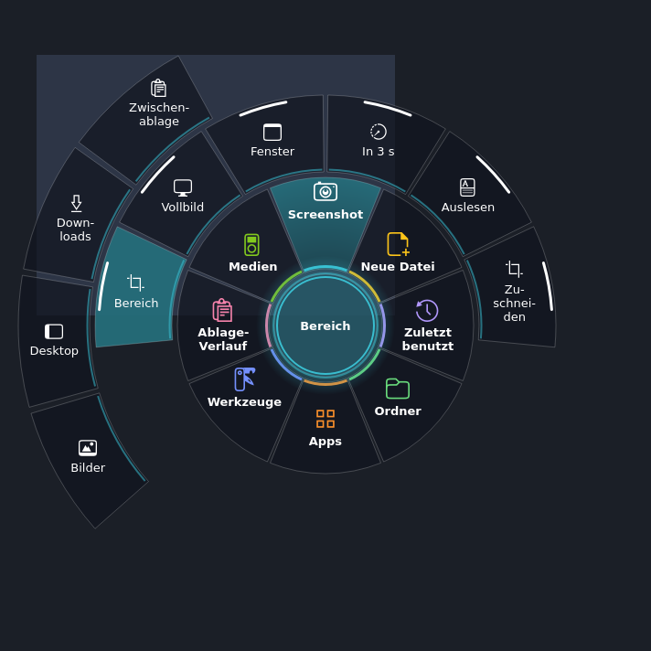
So bedienst du es
Halten
Mittlere Maustaste ~0,3 s gedrückt halten, ohne die Maus zu bewegen. Das HUD öffnet sich um den Zeiger.
Ziehen
Mit gehaltener Taste in einen Bereich ziehen. Sein Untermenü fächert nach außen auf.
Loslassen
Loslassen auf einem Endpunkt führt ihn aus. Loslassen in der Mitte lässt das HUD offen – dann geht es per Klick weiter.
Schließen
Klick in die Mitte, Klick daneben, Rechtsklick oder
Esc.
Acht Bereiche, immer am selben Platz
Jeder Bereich hat eine feste Lage im Uhrzeigersinn ab 12 Uhr und eine eigene Farbe. Nach kurzer Zeit findet die Hand den Weg ohne Hinsehen.
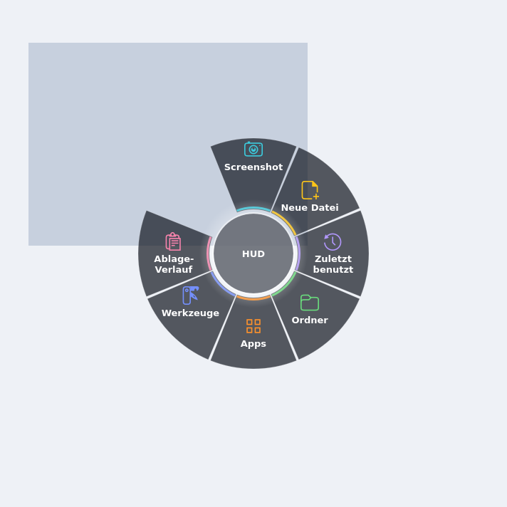
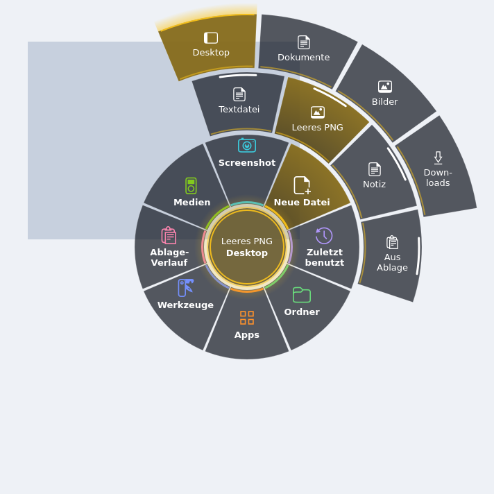
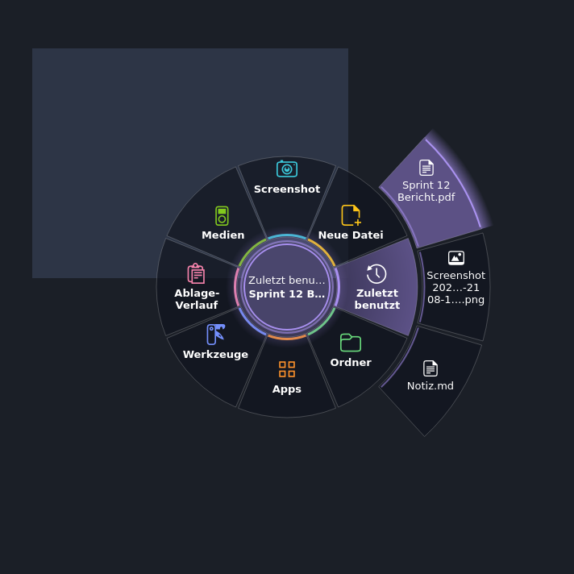
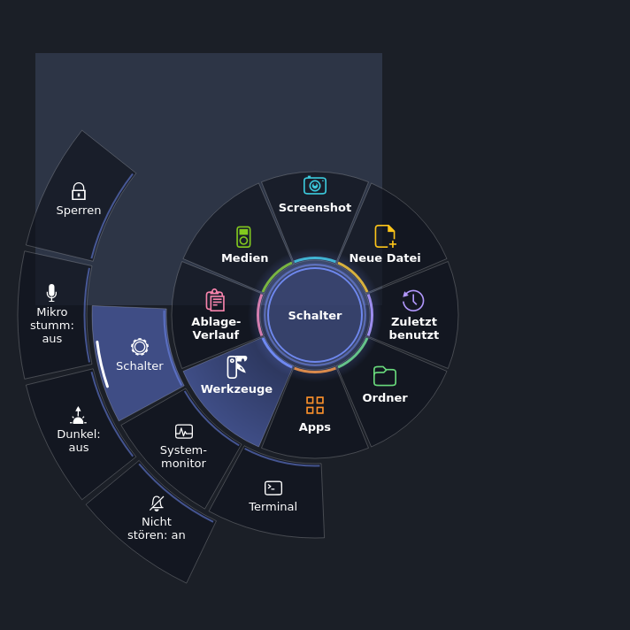
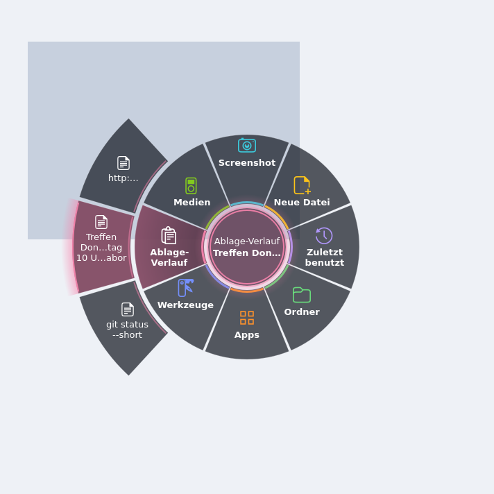
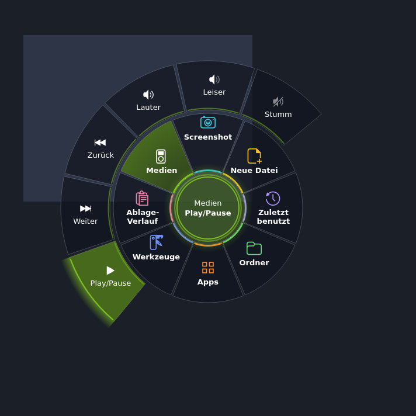
| Lage | Bereich | Inhalt |
|---|---|---|
| 12 Uhr | Screenshot | Aufnehmen, Text aus Bild auslesen, Farbpipette, Zuschneiden |
| 1:30 | Neue Datei | Textdatei, leeres PNG, Notiz, Inhalt der Ablage |
| 3 Uhr | Zuletzt benutzt | letzte 6 Dateien |
| 4:30 | Ordner | Desktop, Downloads, Bilder, Dokumente, dev_ws, Projekte |
| 6 Uhr | Apps | VS Code, Chrome, Dateien, Blender, FreeCAD, Discord (nur installierte) |
| 7:30 | Werkzeuge | Terminal, Systemmonitor, Schalter |
| 9 Uhr | Ablage-Verlauf | letzte 6 kopierte Texte |
| 10:30 | Medien | Wiedergabe steuern (nur wenn etwas läuft) |
Bild-Werkzeuge
Helfer im Bereich Screenshot (12 Uhr), die sonst ein eigenes Programm bräuchten. Aufnehmen geht als Bereich, Vollbild, Fenster oder mit 3 s Verzögerung – nach Bilder, Desktop, Downloads oder in die Zwischenablage.
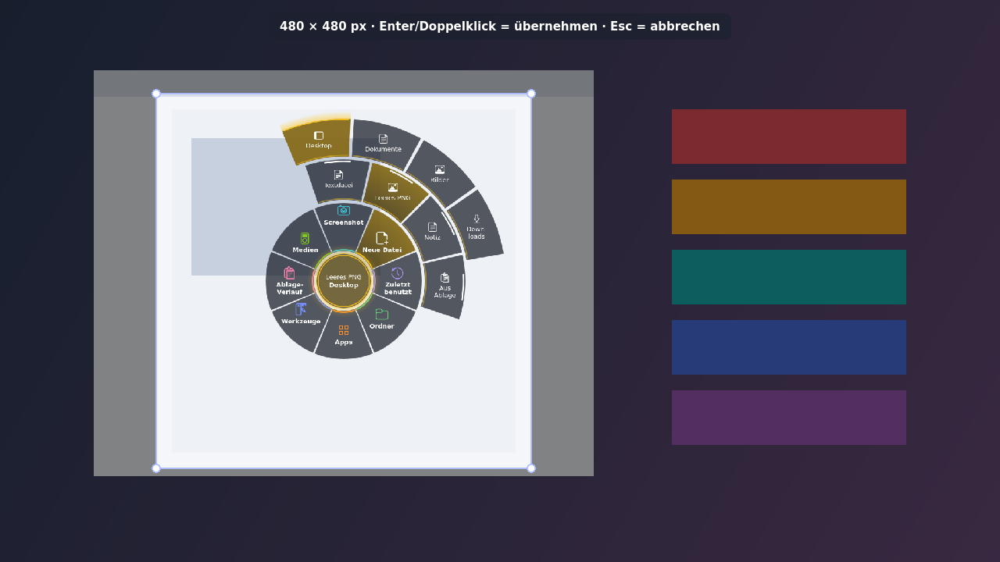
Enter speichert „… zugeschnitten.png“ neben dem Original.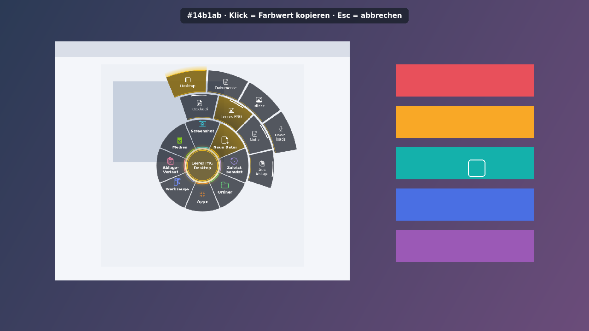
#rrggbb in die Ablage.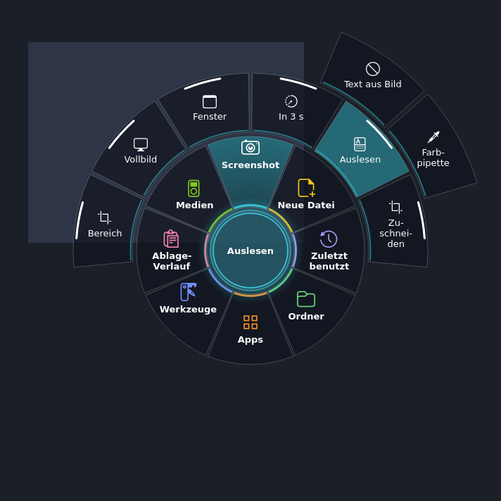
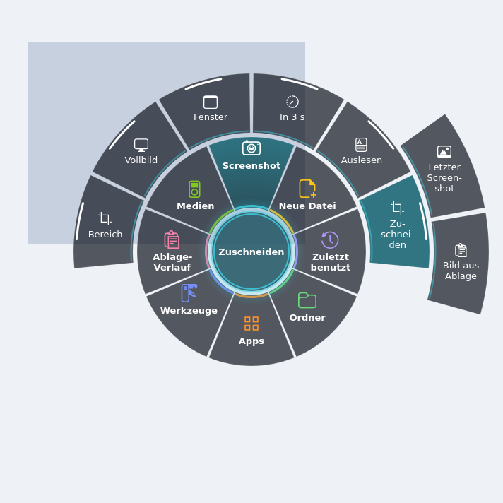
Starten
python3 radial_hud.py # Dienst im Vordergrund
./install_autostart.sh # bei jeder Anmeldung starten
python3 radial_hud.py --demo # HUD einmal öffnen, ohne Maustasten-GrabVoraussetzungen: X11-Sitzung mit Compositor (GNOME), python3-pyqt5, python3-xlib. Optional je Funktion: tesseract-ocr (Text aus Bild), pulseaudio-utils (Lautstärke, Mikro), libnotify-bin (Meldungen). Fehlt ein Programm, zeigt der Eintrag „nicht verfügbar“ und nennt den Installationsbefehl.
Wie es funktioniert
- Mittelklick abfangen, ohne ihn zu stehlen: ein passiver Grab auf Taste 2 hält jeden Mittelklick kurz an; XRecord sieht Loslassen und Bewegung.
- Kurz oder bewegt = normaler Klick: Loslassen oder mehr als 8 px Bewegung vor 300 ms → die App darunter bekommt den Klick bzw. das Ziehen vollständig zurück.
- Beschriftung passt immer: je Segment wird die breiteste Textbox gesucht, die samt Icon hineinpasst – erst Umbruch, dann in der Mitte gekürzt.
- Nichts geht verloren: neue Dateien überschreiben nie etwas (
Name (2).txt), der Ablage-Verlauf bleibt nur im Speicher, Passwort-Manager werden ausgelassen. - Ruhiger Look: jeder Bereich hat eine eigene Farbe; Leuchtsaum am gewählten Endpunkt, atmender Mittelkreis, Lichtstreif und weiches Schließen bleiben dezent.
- Einstellbar: Haltezeit, Bewegungsschwelle, Ringgrößen, Farben und Menü oben in
radial_hud.py.
Prüfen
python3 -m pytest -q test_radial_hud.py # Treffer, Labels, Kontrast ≥ 4,5 : 1, Schalter
python3 radial_hud.py --snapshot /tmp/hud # Bildbogen + je Bereich ein Bild (hell, dunkel)Alle Bilder auf dieser Seite stammen aus --snapshot bzw. den offscreen gerenderten Editoren – Beispieldateien und Ablage-Texte sind Platzhalter.